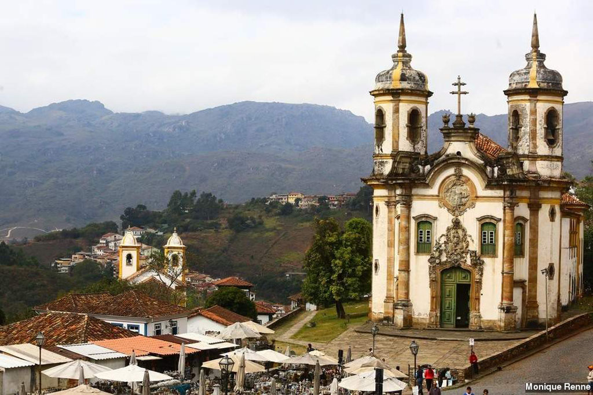
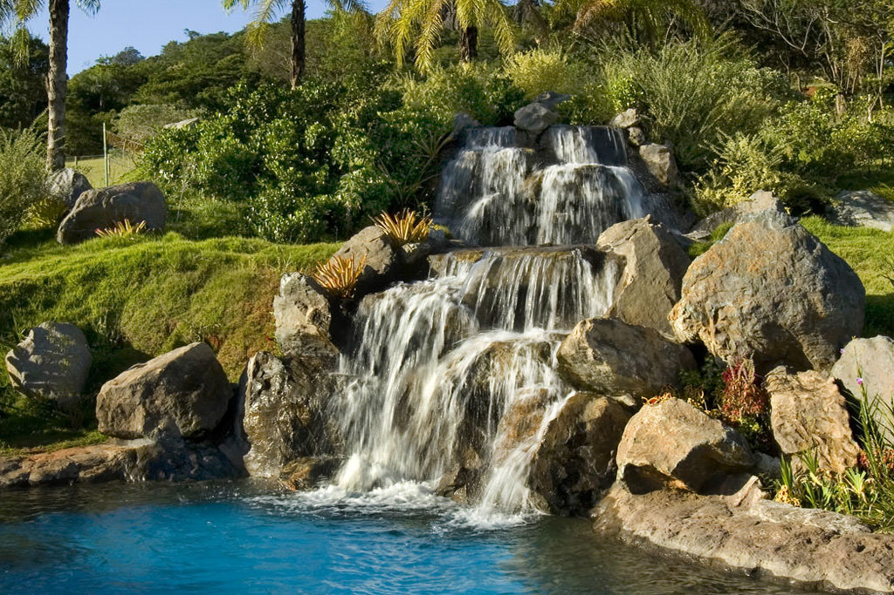
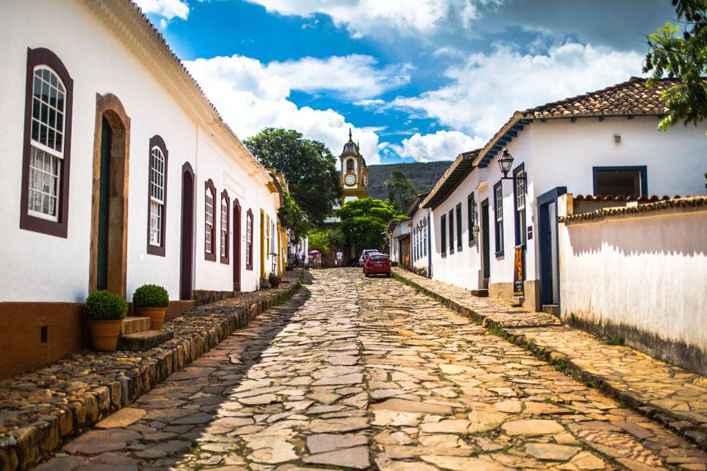

O estado de Minas Gerais começou a ser explorado pela primeira vez no século XVI, quando os bandeirantes entraram na região à procura de ouro e pedras preciosas. Quando soube que a região era rica em minérios e recursos naturais, a Coroa Portuguesa fundou a primeira vila de Minas Gerais em 1711, na cidade de Mariana. Com o atrativo, a região teve um rápido crescimento populacional e logo se tornou um importante centro econômico do país.
Mesmo com a extração, Portugal criou formas rígidas de cobrar mais impostos dos minérios, além de dificultar o desenvolvimento de outras atividades que pudessem garantir mais renda à província, como a exportação de alimentos, fumo, algodão e açúcar. O descaso dos portugueses acabou suscitando em um dos principais movimentos anticoloniais do século XVIII: a Inconfidência Mineira. Inspirados pela Revolução Francesa de 1789, diversos intelectuais, religiosos e proprietários rurais se reuniram com a intenção de livrar o estado do domínio português. O alastramento dos ideais republicanos deixou a monarquia lusitana em alerta, principalmente com a suspeita de conspirações que ameaçassem a estabilidade do governo.
Neste movimento de insurreição, Joaquim José da Silva Xavier, o Tiradentes, foi traído e assassinado em frente à multidão por enforcamento no dia 21 de abril de 1792.
Com os embargos em torno do minério, o estado de Minas Gerais só conseguiu estabilizar sua economia com a comercialização do café, que deu gás para o investimento maciço em transportes e a exportação do produto em outras regiões.
O café foi o primeiro passo para a industrialização do estado. Desta forma, as empresas que injetavam capital privado na região deram impulso para a criação de pequenas e microempresas nos setores alimentícios, têxteis e siderúrgicos. No início do século XX, o café era o principal produto do país, fazendo com que o estado se tornasse uma das maiores potências (além de São Paulo).
Entretanto, na década de 1970, com o Regime Militar, capitais industrializadas como São Paulo, Rio de Janeiro e até mesmo Belo Horizonte ganharam um grande volume de investimento, o que acabou desestruturando as cidades interioranas, que se tornaram dependentes de polos industriais.
Ainda hoje, Minas Gerais é um dos estados mais ricos do Brasil. Sua extensão territorial comporta as nações da França e Bélgica e sua população é estimada em 20,1 milhões de habitantes.
  